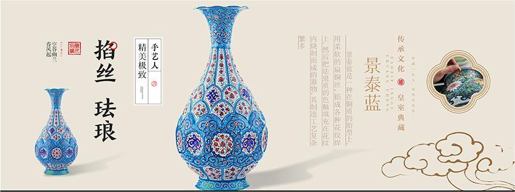
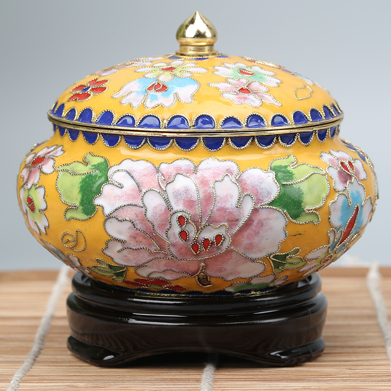

首页
历史沿革
制作工艺
经典作品
互动体验
在线调查
在线调查
1.你了解景泰蓝吗？
了解
很了解
不了解
比较好
比较差
不太清楚
2.您认为景泰蓝工艺的主要特点是什么？（可多选）
需要高温烧制
使用多种颜色
主要用于装饰品
所有以上选项
无特定特点
其他补充
3.您认为景泰蓝工艺的传承最重要的是什么？（可多选）
保持传统工艺技术
创新发展以适应现代市场
加强对年轻一代的教育和培训
提高公众对景泰蓝的认知度
所有以上选项
其他补充
4.您是否愿意购买或定制景泰蓝工艺品？
非常愿意
愿意，但价格要合理
不太愿意
完全不愿意
视情况而定
5.您认为景泰蓝工艺在未来的发展方向是什么：
6.您认为景泰蓝工艺在您的地区是否有特殊的文化意义：
7.您对景泰蓝的传承和保护有何建议：
8.请填写您的宝贵意见:

彩釉金丝，新起之蓝
welcome！